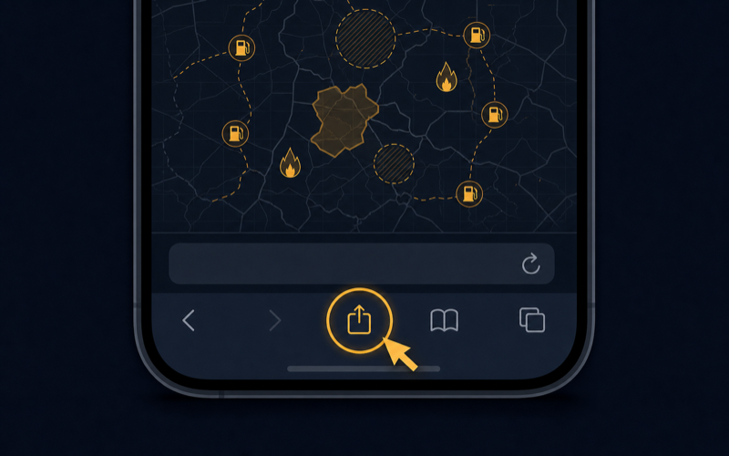
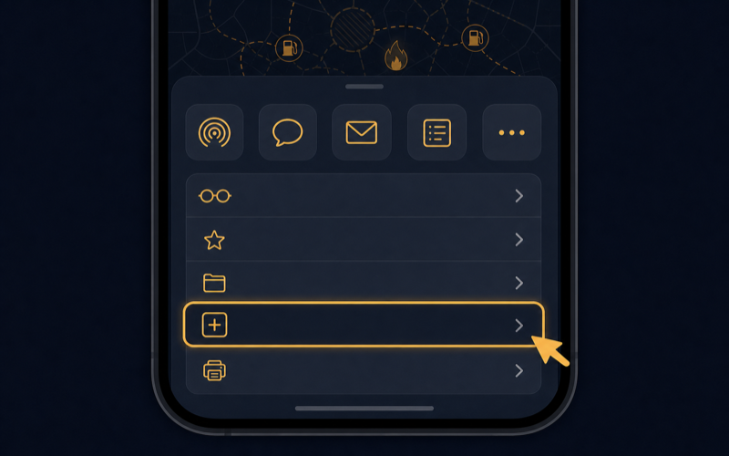
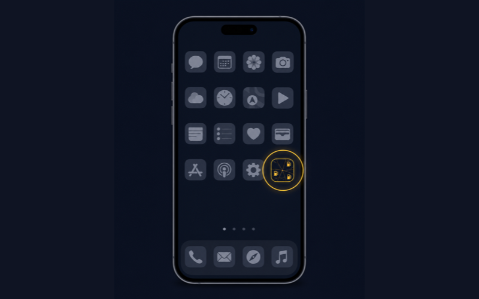
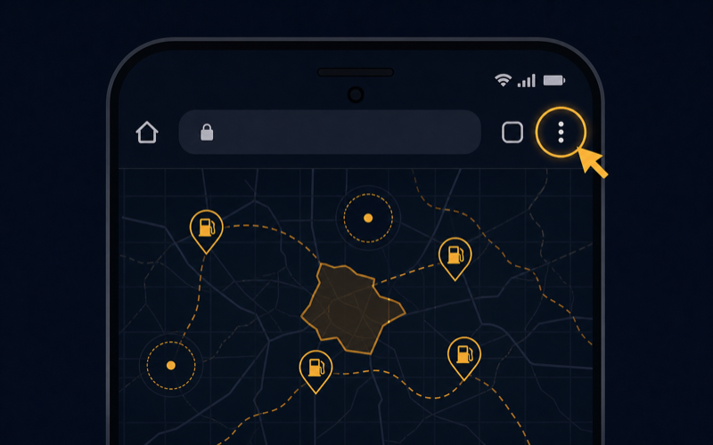
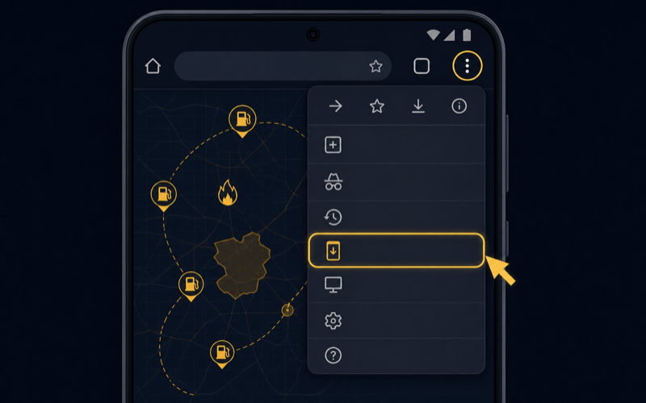
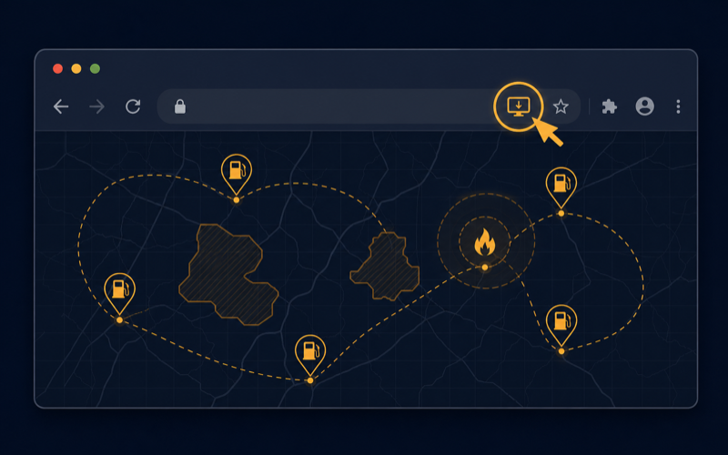

⛽
Установите приложение — будьте в курсе
PWA · БЕЗ МАГАЗИНОВ ПРИЛОЖЕНИЙ
«Топливный фронт РФ» ставится прямо из браузера — как обычное приложение, иконкой на экран. Открывается на весь экран, работает и без сети (последняя загруженная карта), обновляется само. Ставить ничего из App Store / Google Play не нужно.
🍏 iPhone / iPad (Safari)
- Откройте сайт в Safari (не в Chrome — на iOS ставится только из Safari).

- Нажмите кнопку «Поделиться» ⬆️ внизу экрана.

- Выберите «На экран «Домой»» и нажмите «Добавить» — иконка появится на рабочем столе.

🤖 Android (Chrome)
- Откройте сайт в Chrome, нажмите меню ⋮ (три точки справа вверху) и выберите «Установить приложение» (либо нажмите кнопку установки прямо в адресной строке).

- Подтвердите — иконка появится в списке приложений.

💻 Компьютер (Chrome / Edge)
- Откройте сайт в Chrome или Edge и нажмите значок установки ⊕ в правой части адресной строки (или меню → «Установить»). Приложение откроется в отдельном окне и появится в системе.

🔔 Оповещения. Пока уведомления о тревогах БПЛА приходят в Telegram — бот @BPLAlert_bot (работает и при закрытом приложении). Push-уведомления в самом приложении — скоро.
← Открыть карту